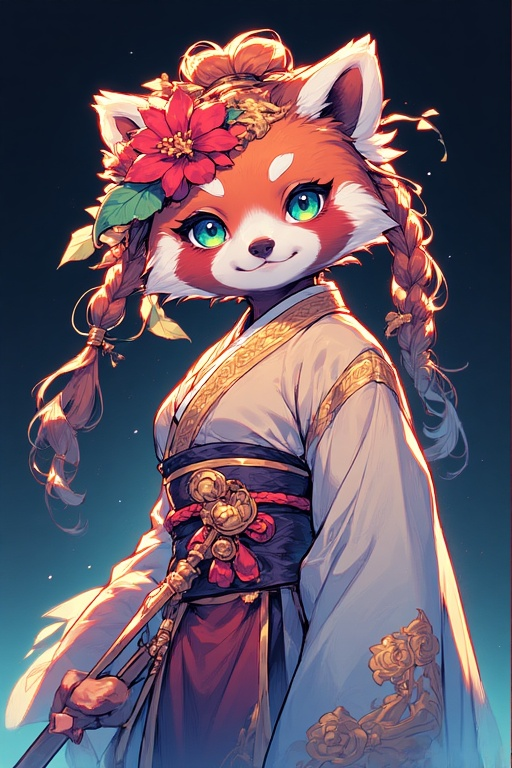

0005 – Sui Mitsuko
Feline, roter Panda, Heilerin und Solaris-Anwenderin. Versiegelt die Präsenz in Anne teilweise und begleitet sie nach der Verbannung. Sui glaubt fest an Annes Unschuld.
Wichtigste Beziehung
Anne Marinowar: Schutzbefohlene und enge Bezugsperson.